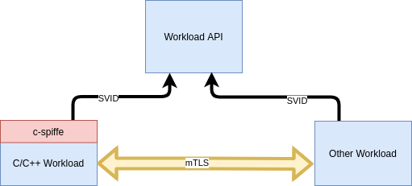

C extension for Spiffe platform.


Introduction
SPIFFE stands for Security Identity Framework for Everyone and is a set for securely identifying system in dynamic and heterogeneous environment. Please refer to SPIFFE Documentation for more information.
C-spiffe is an extension for Spiffe that allows any workload written C, C++ or any language that supports loading a .so library, access Workload API and establish a mTLS connection with other workloads.
The image above shows an example, where a C/C++ Workload imports the c-spiffe library in order to fetch a SVID and use it to establish a mTLS connection with another Workload, which can be implemented in another language, provided it follows the SPIFFE standard.

Motivation
Even though there is an official c-spiffe library, we started this one from scratch. We wanted a C implementation (not C++) for better compatibility. We also based most of the design decisions on go-spiffe, which is the offical supported extension by the Spiffe Community.
Project structure
Folders
The project folder structure is described as follows:
- bundle Source code for bundle module
- cmake Configuration for cmake build
- docker Configuration files for container used to build this lib
- img Images files for documentations
- infra Container orchestration for tests environment
- integration_test Source code for automated test
- internal Souce code for internal module
- protos Source code for gRPC protos
- spiffeid Sour code for spiffeid module
- spiffetls Source code for spiffetls module
- svid Source code for SVID module
- utils Source code for utility functions
- workload Source code for workload
Remarkable files
- CMakeList.txt Main build configuration file. Each source folder also has its own CMake file.
- README.md This README.
- [LICENSE](LICENSE) Project license.
- BUILDING.md Instructions on how to build c-spiffe in your system.
- CONTRIBUTING.md Guidelines for contributing to c-spiffe project.
Using C-Spiffe
Installing
Install from source
Reffer to BUILDING.md
Install on system
We are planning on delivering package for the most popular Linux distros, but at this moment, only building from source is supported.
Basic usage
Refer to Examples for more information.
Initial Contributors
- Ariana Guimarães
- Débora Silva
- Glaucimar Aguiar
- Otávio Silva
- Rodrigo Carvalho
- Thiago Jamir
- Willian Alves
Contributing
Refer to Contributing for more information.